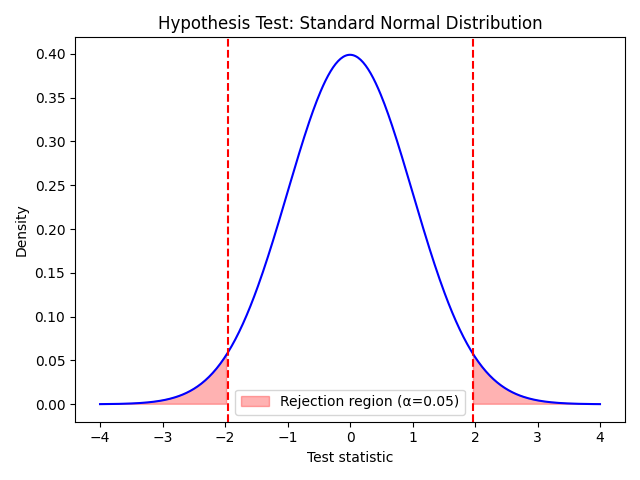

仮説検定と p 値
仮説検定は、観測されたデータが偶然のばらつきによるものか、それとも本質的な差が存在するのかを判断するための統計手法です。ここでは仮説検定の基本的な流れと、p 値の解釈について説明します。
仮説検定の基本手順
一般的な仮説検定では、まず帰無仮説 (H0) と対立仮説 (H1) を設定します。H0 は「差がない」「効果がない」などの主張であり、H1 はそれに対する代替仮説です。
次に、サンプルデータから検定統計量（t 値や z 値など）と p 値を計算し、あらかじめ定めた有意水準と比較して帰無仮説を棄却するかどうかを判断します。
仮説検定の流れ
- 帰無仮説 H0 と対立仮説 H1 を定める。
- 標本データを集め、検定統計量を計算する。
- 検定統計量から p 値を求める（標準正規分布や t 分布を使用）。
- p 値と有意水準を比較し、帰無仮説を棄却するか判断する。
- 結果を解釈し、研究の文脈に沿って結論を述べる。
p 値は「帰無仮説が真であるときに、現在のデータ以上に極端な結果が得られる確率」を意味します。この値が有意水準より小さい場合に帰無仮説を棄却します。
p 値の解釈
p 値はデータとモデルの不一致の程度を示す指標であり、p 値が小さいほど帰無仮説の下では起こりにくいデータが得られたことを意味します。ただし、p 値そのものが帰無仮説の真偽を直接示すわけではありません。
p 値の解釈には有意水準の設定や検定の前提条件（例えばデータの正規性や独立性）を考慮する必要があり、p 値だけで結論を出すのではなく効果量や信頼区間など他の指標と併せて考えることが推奨されます。

代表的な検定と有意水準
| 検定 | 用途 | 有意水準の例 |
|---|---|---|
| z 検定 | 母分散が既知のときの平均の検定 | 0.05, 0.01 |
| t 検定 | 母分散が未知のときの平均の検定 | 0.05, 0.01 |
| カイ二乗検定 | カテゴリーデータの適合度検定 | 0.05 |
補足: 結果の解釈
仮説検定の結論は「帰無仮説を棄却するかどうか」だけでなく、効果量や信頼区間といった指標も併せて検討します。p 値が有意水準より大きいからといって差が存在しないとは限らず、標本サイズや検出力も重要な要素です。
正しい仮説検定を行うためには、データの分布や検定の前提を理解し、得られた p 値を適切に解釈することが重要です。